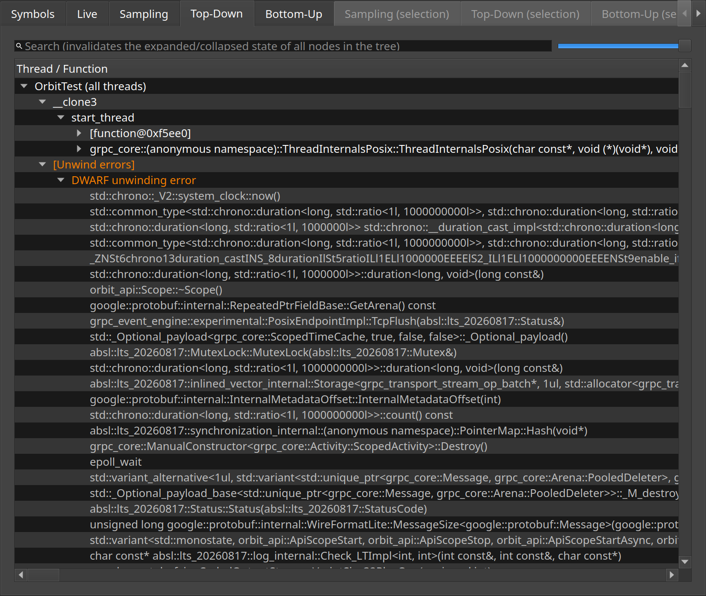

Top-down
The sampled callstacks merged into a tree, from each thread's entry point.
The same samples the Sampling tab counts can be read as a tree instead of a list. The top-down view merges every callstack from the root down, so each node says how much of the capture was spent inside that call path. It answers "what is this thread doing" better than a flat list can.
